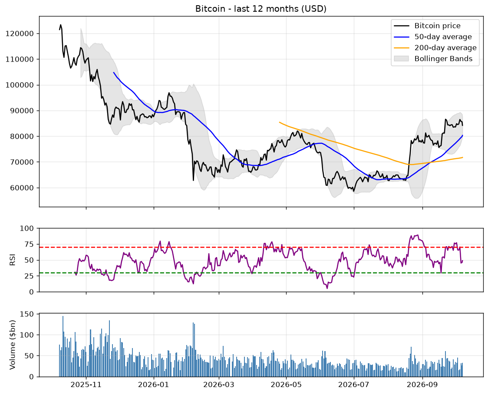

Bitcoin Report
Last updated: Wednesday 07 October 2026 at 07:26 · Price: $84,211
The big picture: BULL MARKET
Most long-term signals point up: Bitcoin is in an uptrend. Dips along the way are still normal.
Bull signs (5)
- Price is above the 200-day average ($71,726)
- The 50-day average is above the 200-day (golden cross)
- Price is well above the 200-week floor ($66,573)
- The 200-day average is rising
- Mood has been positive for a month (average 67)
Bear signs (1)
- Price is still 33% below the all-time high
The chart

Key price levels
Levels above today's price are targets. Levels below are warning lines.
| $100,958 | Within 20% of the record high - bull market confirmed |
| $88,339 | Out of 'deep drop' territory |
| $84,211 | <-- PRICE TODAY |
| $80,295 | 50-day average - a normal pullback zone in an uptrend |
| $79,888 | Below here, the verdict likely drops to TRANSITION |
| $71,726 | 200-day average - below here the long-term trend turns down |
| $66,573 | 200-week floor - past bear markets bottomed near or below it |
Where could we be in 30 days?
Based on every 30-day period in the past year. This is history, not a forecast.
- Half the time: between $73,955 and $89,951
- 1 in 4 times: lower than $73,955
- 1 in 4 times: higher than $89,951
- Rare extremes (1 in 10): below $65,997 or above $98,807
If a bear market returns
How far past bear markets fell from their peak, applied to today's record high of $126,198. Bitcoin is currently 33% below its record.
| -50% | $63,099 | a mild bear market |
| -65% | $44,169 | a deep bear market |
| -77% | $29,026 | like the 2022 bear market |
| -84% | $20,192 | like the 2018 bear market |
How to read this report
- Moving average: the average price over the last X days, drawn as a smooth line. It shows the trend without the daily noise.
- Golden cross: the 50-day line rises above the 200-day line. Recent prices are beating the long-term trend, which has often come before or during bull runs.
- Death cross: the 50-day line falls below the 200-day line. A warning that has often come before longer declines.
- 200-week floor: the average price over about 4 years. Past bear markets bottomed near or below it, so it is seen as deep support.
- Bollinger Bands (grey area): the normal range for the price. Touching the top means stretched high; the bottom means stretched low; a very narrow band often comes before a big move.
- RSI (purple line): 0 to 100. Above 70 means it rose fast and may pause; below 30 means it fell fast and may bounce.
- Volume (blue bars): how much was traded. Big moves on high volume are more convincing than moves on low volume.
- Mood (Fear & Greed): how emotional the market is. Extreme fear has often been near bottoms, extreme greed near tops.
This report describes trends and history. It is not financial advice and cannot predict the future.